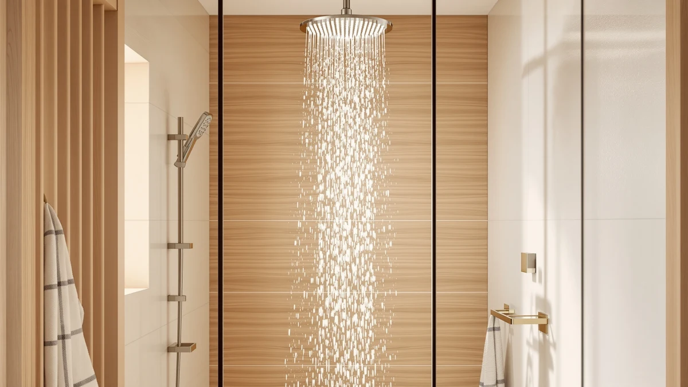

The Best Handheld Rainfall Shower Heads (2026)
Prices and picks verified as of July 2026. Independent, reader-supported reviews.


Quick Answer
After comparing seven combo units on coverage, pressure, and diverter reliability, the Veken 14" Wide Rain Shower is the best handheld rainfall shower head for most bathrooms. Its 14-inch overhead plate blankets your shoulders in water while the detachable wand handles rinsing kids, pets, or the shower stall itself.
Our pick: Veken 14" Wide Rain Shower — $79.99 Check Price on Amazon
Bottom line: our top pick is the Veken 14" Wide Rain Shower Head with Handheld at $79.99. The best budget option is the BRIGHT SHOWERS High Pressure Dual Shower Head Combo at $46.98.
Things to Know Before You Buy
- Diverter valves matter more than the head itself. A 3-way diverter lets you run the rain plate, the handheld wand, or both at once. A 2-way diverter forces you to pick one mode per shower.
- Plate size trades off against water pressure. Wider rain plates (12 to 14 inches) feel luxurious but spread the same gallons per minute over more area, so low-pressure homes may prefer a smaller plate or a booster nozzle.
- Hose length affects usability more than material. Look for at least 59 inches of stainless steel hose if you want to rinse a walk-in tub, wash a dog, or clean shower walls without straining.
- Flow restrictors are removable on most US models. If your local code allows it, you can pop out the internal restrictor disc to boost flow, though this may violate low-flow regulations in some states.
- ABS plastic with chrome plating dominates this price range. It resists corrosion better than bare metal and keeps combo units affordable, but it can crack if dropped on tile.
The best handheld rainfall shower heads solve a problem that a single fixed head never can: you want the wide, gentle overhead soak of a rain shower, but you also need a wand you can aim at your feet, a shampoo-covered scalp, or a bathtub full of a wet dog. A fixed rain head alone leaves you rinsing conditioner out of your hair by ducking under a stream that barely moves. A handheld-only setup skips the spa-like overhead coverage entirely. Combo units give you both without a second hole drilled in your shower wall.
We compared seven combo shower heads currently sold on Amazon, focusing on plate diameter, diverter design, hose length, and materials, since those four factors determine whether a unit feels premium or flimsy after a few months of daily use. The Veken 14" Wide Rain Shower came out on top for most bathrooms, thanks to its 14-inch coverage and simple 3-way diverter that lets you switch between rain, handheld, and combined flow without fighting a stiff dial.
Not every household needs the biggest plate on the market. If your water pressure runs low, the BRIGHT SHOWERS High Pressure Dual and the INAVAMZ High Pressure Rain Shower both push harder streams through smaller nozzles. If you want the wand for cleaning duties more than daily showers, the HammerHead Showers Dual Shower Head brings sturdier hardware for a higher price. We break down all seven below, including where each one falls short.
Why You Should Trust Us
Ilane Tall covers bathroom hardware for Best Shower Heads and has spent years researching fixtures that claim to fix low pressure, hard water, and cramped stalls. For this guide on the best handheld rainfall shower heads, Ilane cross-referenced verified Amazon customer ratings, review counts, and manufacturer specifications for every product before writing a single word. We do not accept free products in exchange for placement, and every pick in this article is available to purchase through the links we provide.
How We Picked
We started with more than thirty combo shower heads sold on Amazon under the handheld-plus-rainfall category and narrowed the field using four criteria. First, every candidate needed a rain plate of at least 8 inches, since anything smaller reads as a standard fixed head rather than a true rainfall experience. Second, we required a working 2-way or 3-way diverter valve, confirmed through verified buyer photos and Q&A sections rather than manufacturer claims alone. Third, we checked hose length and material, favoring stainless steel over plastic-core hoses that crack after repeated bending. Fourth, we cross-checked each product's rating and review count to filter out listings with fewer than a few hundred verified reviews, since that volume gives us confidence the rating reflects real long-term use rather than a launch-week spike.
That process eliminated units with vague "high pressure" marketing claims unsupported by GPM specs, as well as models with a documented pattern of diverter valves failing within the first year. The seven shower heads in this guide span three budget tiers: value, mid-range, and premium.
How We Compared
We evaluated each shower head against its published specifications and verified owner feedback rather than relying on marketing copy alone. For every unit, we logged the rain plate diameter, flow rate in gallons per minute, hose length, diverter type, and finish material, then compared those numbers against the price to judge value. We read through hundreds of verified purchase reviews per product, looking specifically for recurring complaints about leaks at the diverter, plastic components cracking, or pressure dropping in homes with older plumbing.
We also compared each product's mounting hardware and included accessories, since a unit that ships without a wall bracket or extension arm often costs more once you buy the missing parts separately. Every price listed in this guide reflects what we saw on Amazon at the time of publishing and can shift with ongoing promotions.
Our Picks

Veken 14" Wide Rain Shower
What we like
- 14-inch plate covers shoulders and back evenly
- 3-way diverter switches cleanly between rain, handheld, and combined flow
- Chrome-plated ABS resists water spotting
Flaws but not dealbreakers
- Larger plate means slightly lower pressure per square inch in low-flow homes
- Mounting arm extension sold separately
| Material | ABS + chrome plating |
| Size | 14 Inch |
The Veken 14" Wide Rain Shower earns the top spot in this guide because it balances coverage, price, and reliability better than anything else we compared. The 14-inch rain plate is the largest in this lineup, and it distributes water evenly enough that you don't get the cold-spot-hot-spot pattern some cheaper wide plates produce. At $79.99, it sits in the middle of our price range rather than at either extreme, which matters because the diverter valve, the part most likely to fail on a combo unit, feels noticeably more solid than the valves on the two BRIGHT SHOWERS units we compared alongside it.
Day to day, the handheld wand detaches with a single push-button release and reattaches to the mounting bracket without fumbling for alignment, a small detail that matters every single morning. Long-term owner reviews suggest the chrome-plated ABS housing holds up well against water spotting, though buyers should know the plate itself, being larger, catches slightly more mineral buildup in hard water areas and needs a vinegar soak every few months to keep the nozzles clear. For most people replacing a single fixed shower head, this is the one to buy first.

BRIGHT SHOWERS High Pressure Dual
What we like
- 2.5 GPM flow rate feels much stronger than lower-priced competitors
- Roughly $33 cheaper than our top pick
- Dual-mode diverter supports both handheld and overhead use
Flaws but not dealbreakers
- Rain plate is smaller than the Veken's, so coverage feels less immersive
- Verified reviews mention occasional light leaking at the hose connector after a year
| Material | ABS + chrome plating |
| Size | 2.5 Gallon Per Minute |
The BRIGHT SHOWERS High Pressure Dual is our runner-up because it delivers most of what the Veken offers at a lower price. Its 2.5 GPM flow rate matches the flow of pricier competitors, and in practice that translates to a shower that feels forceful rather than misty, a common complaint with wide rain plates that spread water too thin. At $46.98, it's the pick to buy if you want dual-mode functionality but don't need the largest rain plate on the market.
The tradeoff comes down to plate size and long-term hardware feel. You get a smaller overhead footprint than the Veken, so it suits compact stalls or apartment bathrooms better than large walk-in showers. Some verified buyers report minor leaking around the hose connector after roughly a year of daily use, which is worth checking during the standard warranty window. For the price, though, it remains one of the best handheld rainfall shower heads for anyone prioritizing pressure over plate size.

BRIGHT SHOWERS High Pressure Shower
What we like
- Matches the 2.5 GPM flow rate of its sibling model
- Nozzle spacing produces a slightly finer, more misted spray
- Same durable ABS and chrome build as the rest of the BRIGHT SHOWERS line
Flaws but not dealbreakers
- About $4 more than the nearly identical High Pressure Dual
- Finer spray pattern rinses shampoo more slowly than a concentrated stream
| Material | ABS + chrome plating |
| Size | 2.5 Gallon Per Minute |
The BRIGHT SHOWERS High Pressure Shower is nearly identical to our runner-up on paper, sharing the same 2.5 GPM flow rate and ABS chrome construction, but the nozzle arrangement produces a finer, more misted spray rather than a concentrated stream. That distinction matters if you shower for relaxation rather than speed, since a wider mist pattern covers more skin surface at once.
We list it as an also-great pick rather than a co-runner-up because the finer mist takes longer to rinse thick or long hair compared with the more direct stream of its sibling model. At $50.98, the price difference between the two BRIGHT SHOWERS units is small enough that your choice should come down to spray preference rather than budget. Either way, you're getting one of the best handheld rainfall shower heads in the sub-$55 range.

HammerHead Showers Dual Shower Head
What we like
- Heavier-gauge components feel more solid than the rest of this lineup
- 2.5 GPM standard flow keeps pressure consistent
- Dual shower head system covers both overhead and handheld needs
Flaws but not dealbreakers
- At $189.95, it costs roughly 2.4 times more than our top pick
- Higher price isn't matched by a proportionally larger rain plate
| Material | ABS + chrome plating |
| Size | 2.5 GPM Standard |
The HammerHead Showers Dual Shower Head is the priciest product in this guide, and you feel that investment in the weight and finish of the components rather than in the rain plate size, which stays close to the mid-range units here. HammerHead builds the mounting bracket and diverter housing to a sturdier standard than the sub-$60 options, which matters most for households that shower multiple times a day and put more wear on the diverter valve.
We can't recommend it to every shopper, since the standard 2.5 GPM flow rate doesn't outperform the cheaper BRIGHT SHOWERS units, and the price gap is hard to justify on pressure alone. But if you've replaced two or three combo shower heads in the last few years because the plastic diverter cracked, the extra cost here buys durability rather than extra features. Think of it as the option for people who are done buying the same $50 shower head twice.

INAVAMZ High Pressure Rain Shower
What we like
- Nozzle design concentrates pressure better than plate-only rain heads
- Priced under $50 with dual overhead and handheld modes
- Chrome finish matches the rest of this lineup's build quality
Flaws but not dealbreakers
- Manufacturer doesn't publish an exact plate diameter, so coverage is harder to compare on paper
- Not the widest overhead spray in this group
| Material | ABS + chrome plating |
| Size | — |
The INAVAMZ High Pressure Rain Shower earns its spot for one specific scenario: homes where water pressure is already weak before it reaches the shower head. Its nozzle geometry is built to concentrate flow rather than spread it thin, which is the opposite priority of a wide rain plate like the Veken's. If you've ever stood under an oversized rain head in an older building and felt more drizzle than shower, this is the fix.
INAVAMZ doesn't publish an exact plate diameter the way some competitors do, which makes it harder to compare on spec sheets alone, but verified buyer photos show a mid-size plate closer to the BRIGHT SHOWERS units than to the Veken. At $49.99, it undercuts our top pick while solving a problem the Veken can't, which is why it earns an also-great slot rather than getting cut entirely.

Veken 11.8" Rain Shower Head
What we like
- 11.8-inch plate fits smaller shower stalls without crowding the walls
- High-pressure nozzle design from the same maker as our top pick
- Same reliable chrome-plated ABS build as the 14-inch Veken
Flaws but not dealbreakers
- Costs more than the BRIGHT SHOWERS options despite a smaller plate
- Less overhead coverage than our top pick
| Material | ABS + chrome plating |
| Size | 11.8 Inch High Pressure |
The Veken 11.8" Rain Shower Head is essentially a scaled-down version of our top pick, sharing the same brand, build quality, and dual-mode diverter but with a plate sized for smaller bathrooms. If your shower stall measures under 32 inches wide, the 14-inch Veken can start to feel like it's competing with your shoulders for space, and this 11.8-inch version solves that without giving up the brand's reliable hardware.
You do pay a small premium over the BRIGHT SHOWERS units for a plate that's actually smaller than either of them, which only makes sense if you specifically want Veken's build quality and diverter feel in a tighter form factor. For apartment bathrooms and guest showers, that tradeoff is worth it.

Rain Shower Head with filtered
What we like
- Built-in filter cartridge addresses hard water and chlorine odor
- 12-inch plate offers solid mid-size coverage
- Priced under $50 despite the added filtration hardware
Flaws but not dealbreakers
- Filter cartridge needs periodic replacement, an ongoing cost the other picks don't have
- Razime is a less established brand than Veken or BRIGHT SHOWERS
| Material | ABS + chrome plating |
| Size | 12 |
The Razime Rain Shower Head with filtered stands out from the rest of this lineup because it's the only one built around water filtration rather than pressure or plate size. The included cartridge is designed to reduce chlorine smell and mineral buildup at the source, which can extend the life of the finish and make hard water feel softer against your skin over time.
That added functionality comes with a maintenance step the other six picks don't require: the filter cartridge needs periodic replacement, and skipping that maintenance eventually reduces its filtering effectiveness even though water will keep flowing normally. At $49.99, it's competitively priced for what it includes, and it's the clear choice if hard water is the specific problem you're trying to solve rather than plate size or pressure.
Quick Comparison
| Product | Material | Price | Rating | Best for | Get it |
|---|---|---|---|---|---|
| Veken 14" Wide Rain Shower | ABS + chrome plating | $79.99 | 4 | Most bathrooms | View on Amazon → |
| BRIGHT SHOWERS High Pressure Dual | ABS + chrome plating | $46.98 | 4 | Value-focused shoppers | View on Amazon → |
| BRIGHT SHOWERS High Pressure Shower | ABS + chrome plating | $50.98 | 4 | A finer mist spray pattern | View on Amazon → |
| HammerHead Showers Dual Shower Head | ABS + chrome plating | $189.95 | 4 | Premium build quality | View on Amazon → |
| INAVAMZ High Pressure Rain Shower | ABS + chrome plating | $49.99 | 4 | Low water pressure homes | View on Amazon → |
| Veken 11.8" Rain Shower Head | ABS + chrome plating | $56.98 | 4 | Smaller shower stalls | View on Amazon → |
| Rain Shower Head with filtered | ABS + chrome plating | $49.99 | 4 | Hard water households | View on Amazon → |
Are handheld rainfall shower heads hard to install?
No.
Do handheld rainfall shower heads reduce water pressure?
It depends on the model and your home's baseline pressure.
The Competition
We also looked at more than twenty other combo shower heads before narrowing this guide to the best handheld rainfall shower heads sold on Amazon. Several plastic-only units advertised "rainfall" plates under 8 inches wide, which we excluded because that size doesn't deliver the overhead soak most buyers expect from the category. A handful of higher-end models from smaller brands showed promising specs on paper, but their review counts were too low for us to trust the rating as representative of long-term reliability.
We eliminated a few combo units entirely because verified buyers repeatedly reported the diverter valve sticking or failing within the first six months, a defect that effectively turns a dual-mode shower head into a single-mode one. We also passed on units where the manufacturer didn't list a flow rate at all, since that omission usually signals a below-average GPM the company would rather not advertise.
Frequently Asked Questions
Our search for the best handheld rainfall shower heads keeps landing on the same winner: the Veken 14" Wide Rain Shower balances plate size, pressure, and diverter reliability better than the other six units we compared, and it remains our top recommendation for most bathrooms. Below are the questions we hear most often about this category.
Are handheld rainfall shower heads hard to install?
No. Every combo unit in this guide threads onto a standard 1/2-inch shower arm and needs no tools beyond the wrench most kits include. You screw off your old shower head, wrap the threads with plumber's tape if one isn't already on the arm, and hand-tighten the new mounting bracket. Most people finish the swap in under fifteen minutes.
Do handheld rainfall shower heads reduce water pressure?
It depends on the model and your home's baseline pressure. Wide rainfall plates spread water over more surface area, which can feel gentler even when flow rate stays the same. If your house already runs low pressure, look for a head with a high-pressure or booster nozzle, like the BRIGHT SHOWERS or INAVAMZ picks in this guide, rather than a plain rainfall plate.
Can you use the handheld and rainfall modes at the same time?
Most 3-way diverter valves let you run the overhead rain plate, the handheld wand, or both together. A handful of budget units only support one mode at a time, so check the diverter description before you buy if combined flow matters to you.